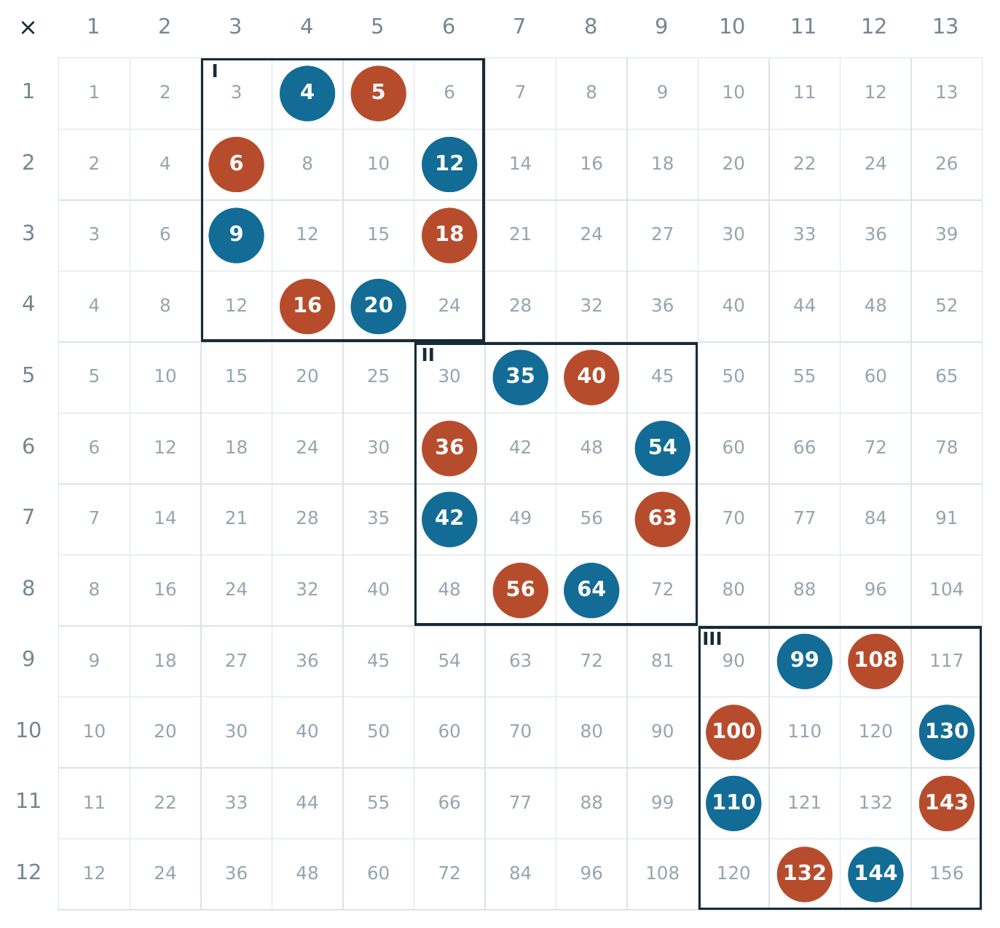
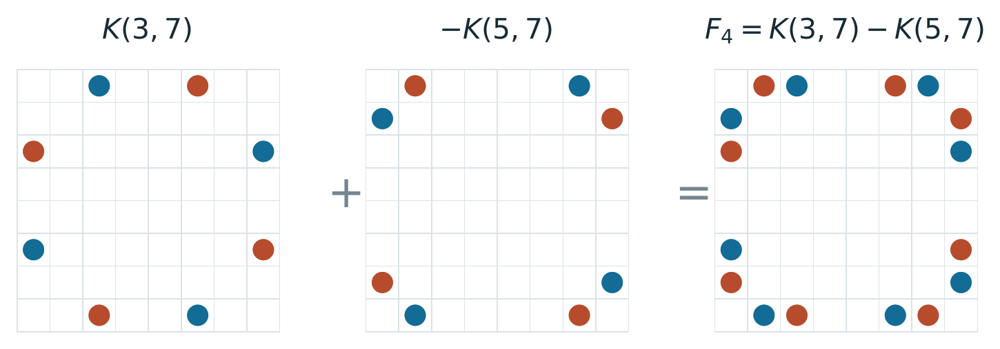
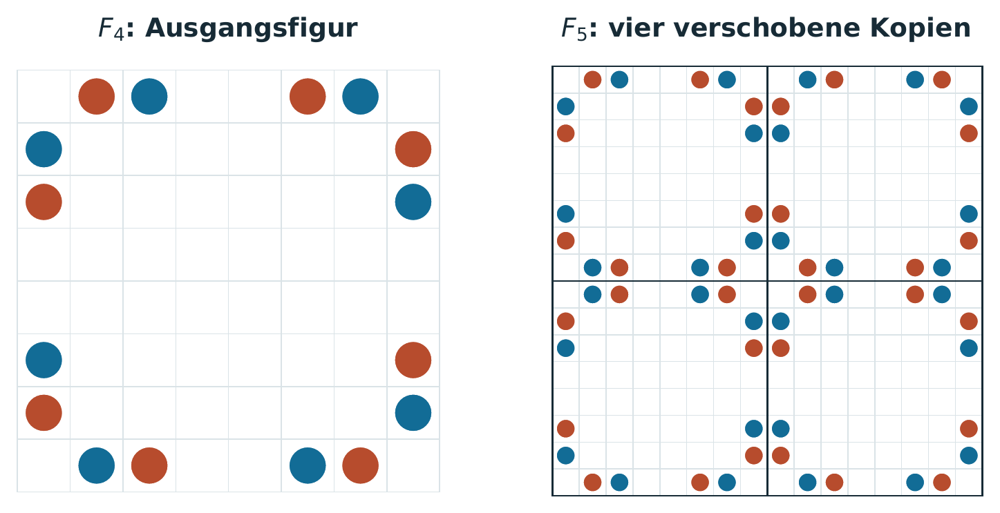
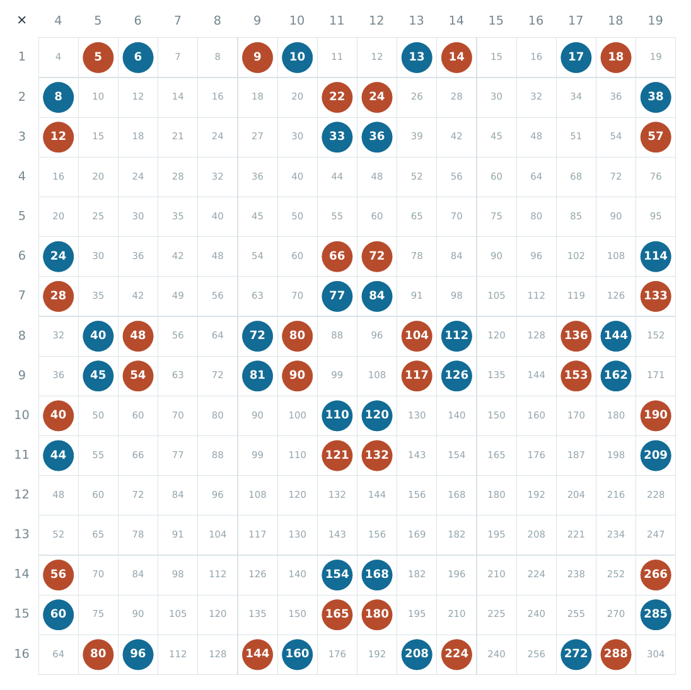

Topographische Experimente
· Notiz
Ausgangspunkt dieser kleinen Notiz ist Abschnitt 6.3 („Topographie der Zeichen“) meiner Arbeit Die Oberfläche der Mathematik. Für die Suche nach solchen – wie ich sie nenne – topographischen Rekonfigurationen habe ich KI (GPT-6) eingesetzt; sie kann riesige Mengen von Figurationen untersuchen. Dabei kam ich zu den folgenden Fundstücken:
i) Sechseckrahmen
Ordnet man die Dreieckszahlen in Zeilen der Längen 1, 2, 3, … an, erhält man für die alternierende Summe der sechs Ecken eines regelmäßigen Sechseckrahmens D = r³, bei passenden Scherungen D = hr² (h: horizontale Breite, r: Zeilenabstand). Der Ort ist beliebig: Durch Verschieben bekommt man neue Zahlenidentitäten.
Sechseckrahmen – alle Abbildungen
Zum Vergrößern ein Bild anklicken.


ii) Zahlenkränze
Ordnet man die Produkte natürlicher Zahlen in einer Tafel an, findet man Kränze mit gleichen Summen, Quadratsummen und Produkten beider Farben – unabhängig von Lage und Streckung. Zusammengelegte, teils umgefärbte Kränze gleichen höhere Potenzen aus. Man erhält damit geometrische Lösungen des Prouhet-Tarry-Escott-Problems.
Möglicher Vorläufer: Andreas Alpers / Rob Tijdeman, The two-dimensional Prouhet–Tarry–Escott problem (2007), Abschnitt 2.3 (Achtpunkt-Figur). Die dort behandelten Gleichheiten betreffen gemischte Potenzsummen auf Gittern.
Zahlenkränze – ausgewählte Bilder
Zum Vergrößern ein Bild anklicken. Die Werte unter jedem Bild gelten jeweils für beide Farbgruppen.
K = Kranz, F = Potenzrahmen; der Index zählt die gleichen Potenzsummen (F₄: Potenzen 1–4). K(3, 7): verdoppelte Radien; −K: Farbtausch.

I. Summe: 4 + 12 + 9 + 20 = 5 + 6 + 18 + 16 = 45.
Quadratsumme: 42 + 122 + 92 + 202 = 52 + 62 + 182 + 162 = 641.
Produkt: 4 · 12 · 9 · 20 = 5 · 6 · 18 · 16 = 8 640.
II. Summe: 35 + 54 + 42 + 64 = 40 + 36 + 63 + 56 = 195.
Quadratsumme: 352 + 542 + 422 + 642 = 402 + 362 + 632 + 562 = 10 001.
Produkt: 35 · 54 · 42 · 64 = 40 · 36 · 63 · 56 = 5 080 320.
III. Summe: 99 + 130 + 110 + 144 = 108 + 100 + 143 + 132 = 483.
Quadratsumme: 992 + 1302 + 1102 + 1442 = 1082 + 1002 + 1432 + 1322 = 59 537.
Produkt: 99 · 130 · 110 · 144 = 108 · 100 · 143 · 132 = 203 860 800.

Summe: 6 + 10 + 8 + 33 + 24 + 77 + 40 + 72 = 5 + 9 + 22 + 12 + 66 + 28 + 48 + 80 = 270.
Potenzsumme 2: 62 + 102 + 82 + 332 + 242 + 772 + 402 + 722 = 52 + 92 + 222 + 122 + 662 + 282 + 482 + 802 = 14 578.
Potenzsumme 3: 63 + 103 + 83 + 333 + 243 + 773 + 403 + 723 = 53 + 93 + 223 + 123 + 663 + 283 + 483 + 803 = 945 270.
Potenzsumme 4: 64 + 104 + 84 + 334 + 244 + 774 + 404 + 724 = 54 + 94 + 224 + 124 + 664 + 284 + 484 + 804 = 66 119 986.
Produkt: 6 · 10 · 8 · 33 · 24 · 77 · 40 · 72 = 5 · 9 · 22 · 12 · 66 · 28 · 48 · 80 = 84 304 281 600.


Summe: 6 + 10 + 13 + 17 + … + 272 = 5 + 9 + 14 + 18 + … + 288 = 3 128.
Potenzsumme 2: 62 + 102 + 132 + 172 + … + 2722 = 52 + 92 + 142 + 182 + … + 2882 = 482 760.
Potenzsumme 3: 63 + 103 + 133 + 173 + … + 2723 = 53 + 93 + 143 + 183 + … + 2883 = 92 529 368.
Potenzsumme 4: 64 + 104 + 134 + 174 + … + 2724 = 54 + 94 + 144 + 184 + … + 2884 = 20 184 707 784.
Potenzsumme 5: 65 + 105 + 135 + 175 + … + 2725 = 55 + 95 + 145 + 185 + … + 2885 = 4 787 526 120 248.
Produkt: 6 · 10 · 13 · 17 · … · 272 = 5 · 9 · 14 · 18 · … · 288 = 13 667 787 213 944 905 463 008 903 287 332 270 875 645 231 654 502 400 000 000.